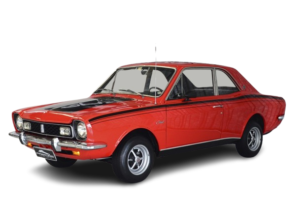

CORCEL GT
Um ícone de elegância esportiva e liberdade sobre rodas, o Corcel GT é a alma dos anos 60 e 70 que ainda hoje desfila com charme, lembrando a paixão por carros que combinam estilo e performance.

HISTÓRIA
Sua história começa com o lançamento do Ford Corcel em 1968. Curiosamente, o Corcel não era um projeto original da Ford do Brasil, mas sim derivado do protótipo Renault 12 (projeto M120) que a Willys Overland do Brasil havia comprado da Renault antes de ser absorvida pela Ford. Quando a Ford assumiu a Willys, o projeto foi continuado e adaptado para o mercado nacional, resultando no Corcel.
A versão GT (Grand Touring) foi lançada já em 1969, apenas um ano após o Corcel original. Ele foi posicionado como a opção mais esportiva da linha, visando um público jovem que buscava um carro com um toque de desempenho e estilo.
O Corcel GT se destacava pelo seu visual: faróis duplos redondos, faixas esportivas laterais, grade exclusiva, conta-giros no painel e rodas com calotas especiais. Inicialmente, utilizava o motor 1.3L de 68 cv, que, para a época e para o peso do carro, oferecia um desempenho ágil.
Apesar de sua popularidade, a sigla GT no Corcel foi descontinuada em meados da década de 1970, com o lançamento da linha Corcel II, que traria outras propostas esportivas. No entanto, o Corcel GT permanece na memória como um símbolo de esportividade elegante e um carro que soube mesclar as influências europeias com o gosto do consumidor brasileiro.
FICHA TECNICA
Modelo: Corcel GT
Ano: 1975
Motor: 1.4 gasolina
Potência: 85 cv
Torque: 11,6 kgfm
0–100 km/h: 16,6 s
Vel. Máx: 144 km/h
Peso: 962 kg
Tração: Dianteira
Câmbio: Manual 4 marchas
Dimensões (C×L×A): 4.471×1.621×1.374 mm
CURIOSIDADE
Uma curiosidade interessante sobre o Ford Corcel GT é a sua origem francesa e a tecnologia avançada que ele trouxe para o mercado brasileiro em sua época. O Corcel foi desenvolvido a partir do projeto do Renault 12, um carro moderno para o final dos anos 60. Isso significa que, ao ser lançado no Brasil pela Ford, o Corcel GT (e as outras versões) já vinha com características de engenharia que não eram comuns nos carros nacionais daquele tempo, como a tração dianteira, suspensão independente nas quatro rodas e um motor com comando de válvulas no cabeçote.
GALERIA
Imagens do Corcel GT
Canal: Renato Bellote